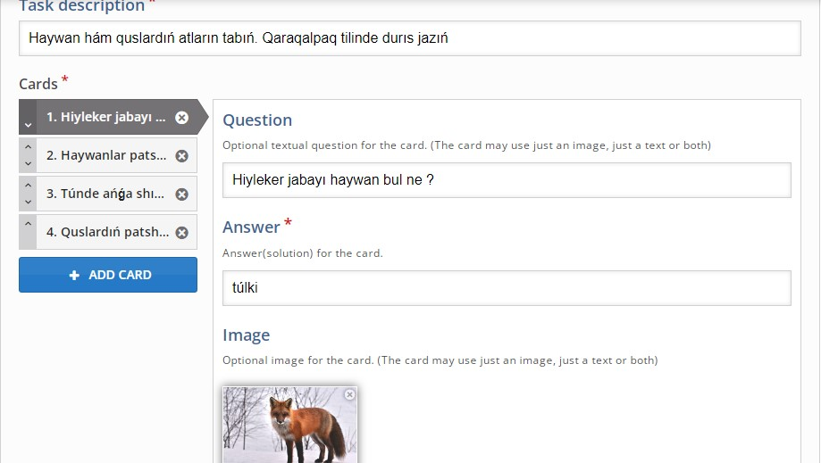

Trenajer –real obektlerdi basqarıw ushın tán bolǵan, úyretiwshi háreketlerdi kóp orınlaw arqalı materiallıq obektlerdi basqarıw ushın zárúr bolǵan uqıp hám kónlikpelerin qáliplestiriw hám jetilistiriw ushın mólsherlengen ,oqıwshınıń kásiplik tayarlanıwınıń texnikalıq quralı bolıp tabıladı.
14-TEMA
TRENAJER OQIW PROGRAMMALARI
Trenajer úsh zárúr bolǵan bólekke ıye bolıwı kerek: konstruktiv (operatordıń jumıs jayınıń anıq nusqası ); programmalıq támiynat (úskeneler hám processlerdiń uyqas modeli); didaktikalıq (operatordıń háreketlerin bahalaw hám monıtorıń qılıw programması, basqa birdey dárejede zárúrli servis programmaları menen instruktordıń jumis ornı).
Trenajer oqıwshılardıń bilim, kónlikpe hám ilmiy tájriybelerin bahalaw hám olardıń tapsırmalardı qayta-qayta orınlaw arqalı maqsetli tayarlawdıń ayrıqsha usılı bolıp tabıladı.
Trenajer oqıwshılarǵa tómendegi múmkinshiliklerdi beredi:
- óz betinshe qadaǵalaw jumıslarına tayarlanıw ;
- óz betinshe tayarlıq dárejesin anıqlaw hóm onıń nátiyjelerin qadaǵalaw jumıslarına tayarlanıw processinde úzliksiz túrde bahalaw ;
- strukturası mámleket tálim standartlarına sáykes keletuǵın test variantlarınan nátiyjeli paydalanıw ;
- trenajer menen islew processinde hár bir tapsırma boyınsha kerekli teoriyalıq maǵlıwmatlar, ámeliy mısallar hám túsindiriwlerdi alıw ;
- pánni úyreniw barısındaǵı kemshiliklerdi saplastırıw hám alınǵan bilimlerdi bekkemlew.
https://h5p.org servis járdeminde qaraqalpaq tilin úyretiwshi trenajer jaratıw
Flashcards túri - bul kartanıń bir tárepinde suwret hám basqa tárepinde sáykes keletuǵın tekstti óz ishine alǵan kartalar kompleksi. Oqıwshıdan kartanı awdarıp, durıs juwaptı kórsetiwden aldın suwretke sáykes keletuǵın sóz yamasa sóz dizbegin kirgiziw soraladı.
Kartalardı oqıwshılarǵa sózlerdi, sóz dizbeklerin yamasa gáplerdi eslep qalıwǵa járdem beretuǵın shınıǵıw sıpatında isletiliwi múmkin. Ápiwayı kartalarda kartanıń bir tárepinde járdemshi sózler hám basqa tárepinde juwabı boladı . H5 P kartalarında súwretlerden járdemshi sózler sıpatında paydalanadı. Eger siz tekstli járdemshi sózlerge iye kartalardı izleseńiz, Dialog cards(dialog kartalar) túrine itibar beriń.
Kóbinese til úyreniwde sóz hám sóz dizbekilerin eslep qalıw ushın kartalardan paydalanıladı. Kartochkalar matematikalıq máselerdi kórsetiw yamasa oqıwshılarǵa tariyxıy sánelerdi, formulalar yamasa atlar sıyaqlı faktlardı eslep qalıwlarına járdem beriw ushın da isletiliwi múmkin.
1-qádem: Tema
Kóbinese til úyreniwde kartalardan paydalanıladı. Bul sabaqta Qaraqalpaq tilinde sózlerdi durıs jazıwdı úyretiw. Bul sabaǵımızda temamız «Haywan hám quslardıń atların tabıń.Qaraqalpaq tilinde durıs jazıń». Biz hár qıylı qus hám haywanlardıń súwretlerinen ibarat kartalar kompleksin jaratamız. Oqıwshıdan qaraqalpaq tilinde haywan hám quslardıń atın durıs kiritiw soraladı. Biz túlki, arıslan, bayıwlı, búrkit súwretleri kiritemiz. Oqıwshılardan qaraqalpaq tilinde túlki, arıslan, bayıwlı, búrkit atların durıs kiritiw soraladı.
2-qádem: Kartalardı jaratıw
« New content» (Jańa kontent) parametrin saylań hám kontent túrleri diziminen « Flashcards» (Flesh-kartalar) dı saylań :
14.1-súwret Kontent túrleri dizimi
3-qádem: Kartalar redaktorı
Endi Flashcards sorawlar redaktorı payda bolıwı kerek. Redaktordıń tiykarǵı bólegi tómendegishe:
14.2-súwret Flashcards sorawlar redaktorınıń tiykarǵı bólegi
Bul sabaqta biz Flashcards jaratılıwına itibar qaratamız. Sonday etip, biz «Common fields» (Ulıwma maydanlar) bas beti ústindegi redaktor bólimlerine itibar qaratamız.
Flashcards túri «Task description» ( tapsırma tıriypi) hám «Cards» (kartalar ) kópliginen ibarat.
4-qádem: Máseleniń táriypi
Bul jerde biz oqıwshılardıń bul tema menen tanıstıramız. « Task description » ( tapsırma tıriypi) - bul pútkil kartalar jıynaǵı kartalar ústinde kórsetiletuǵın statistikalıq tekst. Tómendegi tekstti kiritiń:
«Haywan hám quslardıń atların tabıń.Qaraqalpaq tilinde durıs jazıń».
5-qádem: Kartalar
Bul birinshi kartada biz oqıwshıǵa túlkiniń suwretin usınıs etemiz hám oqıwshıdan túlkiniń qaraqalpaqsha atın kirgiziwdi so'raymiz.
«Question (soraw ) tekstin hár bir karta ushın individual sazlanıw múmkin. «Question (soraw ) maydanın oqıwshıǵa máseleni sheshiw boyınsha kórsetpeler beremiz. «Question (soraw ) maydanın toltırıw shárt emes.
Tómendegi tekstti kiritiń:
Hiyleker jabayı haywan bul ne?
«Answer» (juwap) maydanına tuwrı juwaptı kiritiń. «Answer» (juwap) maydanına «túlki» sózin kiritiń.
Image astında biz túlkiniń suwretin qosamız.
Biz oqıwshıǵa paydalanıw qolaylı bolıwı ushın birdey ólshemdegi súwretlerden paydalanıń.
Birinshi karta ushın biz bul suwretden paydalanamız :

14.3-súwret Júklep alınǵan jpeg formattaǵı túlkiniń súwreti
Siz júklegen súwretti tabıw ushın «+Add»tuymesin basıń. Suwretti tańlaǵaningizdan keyin, ol juklenedi hám súwrettiń eskizi kórsetiledi.
Biz «Edit copyright»( Avtorlıq huqıqın redaktorlaw) tuymesinen paydalanamız súwret ushın tiyisli litsenziya maǵlıwmatların qosıw ushın :
14.4-súwret Avtorlıq huqıqın redaktorlaw aynası
Sonday etip, biz Flashcards kompleksinen birinshi kartanı jaratıwdı juwmaqladıq. Bunı alıwıńız kerek:
14.5-súwret Flashcards kompleksinen birinshi kartanı jaratıw processi
6 -qádem: Qosımsha kartalardı qosıw
Tap sonday, biz taǵı ush kartanı qosamız hám barlıq kartalar ushın birdey «Task description» tekstinen paydalanamız.
Siz qálegenshe kóp kartalardı qosıwıńız múmkin. Jańa karta qosıw ushın «Add card » ( Karta qosıw) tuymesin basıń.

14.6-súwret birinshi kartanı óshiriw ushın «x» tuymesi
Siz «Card »kartanıń joqarı oń múyeshindegi «x» tuymesin basıw arqalı kartanı óshiresiz. «Card » redaktorınıń shep tárepindegi 1-súwrette kórsetilgen túymelerdi basıp kartalar dizimin ózgertiwińiz múmkin.Tómendegi kartanı joqarıǵa yaki joqardaǵı kartanı tómenge ózgertiwińiz múmkin.
14.7-súwret Tómendegi kartanı joqarıǵa yaki joqardaǵı kartanı tómenge ózgertiw ushın túymesheler
Súwretler tiyisli derekten júklep alınıwı hám keyin redaktorǵa júkleniwi kerek.
7-qádem: Juwmaqlanıwı
Házir sizde tómendegi súwretke iye bolıwıńız kerek :
14.8-súwret Juwmaqlanıw, kerekli bolǵan barlıq kartalardı kiritilip bolǵannan keyingi kórinis
Trenajer tayın bolǵannan keyin yaǵniy juwmaqlawshı kartalar jıynaǵı tayar bolǵannan keyin «Save»( Saqlaw) túymesi járdeminde saqlaymız.
14.9-súwret Trenajerda durısjuwaptı juwaplar aynasına jazılıwı
Bul trenajerdan paydalanıp oqıwshılar qaraqalpaq durıs jazıwdı úyrenedi. Bul trenajer tildi úyreniw ushın jaqsı imkaniyat jaratıp beredi. Oqıwshılar trenajer járdeminde muǵallimniń qadaǵalawısız tildi jaqsı úyreniw hám óz bilimin bahalaw múmkinshıliklerine iye boladı.
Soraw hám tapsırmalar
1. Trenajer oqıw programmaları bul?
2. Trenajer úsh zárúr bolǵan bólekke ıye bolıwı kerek?
3. Trenajer oqıwshılarǵa qanday múmkinshiliklerdi beredi?
4. https://h5p.org servis bul?
5. Flashcards túri – bul?
6. https://h5p.org servisten paydalanıp trenajer dástúr jaratıń